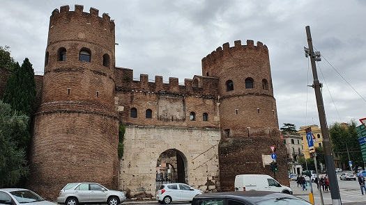

|
Murallas y Puertas
Murallas servianas Las Murallas servianas datan del del siglo IV a.e.c. La murallas tenía una anchura de de 3,6 m y una longitud de unos 11km, con más de una docena de puertas. El nombre hacía honor al Rey de Roma, Servio Tulio. Los restos actuales que se conservan datan del periodo final de la República, como prevención tras el saqueo de Roma por los galos. Fotos de la muralla junto a la Estación de Termini.
Puertas en los Muros servianos La Porta Capena, cerca de la Colina de Celio, sobre la Vía Apia, anteriormente el bosque sagrado donde se creía que Numa Pompilio y Egeria se conocieron y besaron. Porta Carmentalis Porta Querquetulana. Porta Esquilina. También conocida como Arco de Galieno, construida en el Esquilino, justo al lado de la iglesia de San Vito. Porta Collina. Porta Collatina. Porta Viminalis. Porta Collina. Porta Quirinalis. Porta Sanqualis. Porta Salutaris. Porta Ratumena. Porta Fontinalis. La Porta Catularia. Se llamó así porque en sus inmediaciones se sacrificaban perros de color rojizo durante la canícula para aplacar los calores caniculares. Porta Flumentana. Porta Trigemina. Porta Lavernalis. Porta Raudusculana. Porta Naevia. Porta Triunphalis. Porta Salaria era una puerta de la Muralla Aureliana, demolida en 1921. A raíz de la demolición de 1921 se descubrieron varios monumentos funerarios. Puerta Trigemina.
Las Murallas aurelianas Construida por el emperador Aureliano. Su longitud original fue de 19km, pero en la actualidad se conservan 12,5km. Su construcción comenzó a partir del año 271.Las paredes cuentan con 3,5 m de grosor y 8 m de altura con una torre cuadrangular cada 100 pies romanos (29,6 m). Fueron remodeladas en el siglo V, doblando la altura por orden del general Flavio Estilicón. Tenían forma de hexágono y en ellas se emplazaban 382 torres, 7.020 almenas, 18 puertas principales, 5 poternas, 116 letrinas y 2.066 ventanas exteriores. En el año 2001, 400 metros de las murallas fueron destruidos por una tormenta, se restauraron y reinauguraron en el año 2006.
Puertas en los Muros aurelianos
Porta San Paolo. También
llamada Porta Ostiensis, como se llamaba Porta San Paolo en la antigüedad,
conectaba, y todavía conecta hoy, Roma con Ostia.

Porta Ardeatina. Porta Asinaria. Porta Aurelia, después rebautizada Porta Cornelia. Hoy desaparecida. También fue llamada Porta San Pietro. Porta Latina. Porta Metronia, la antigua Porta Metrovia. Porta San Giovanni.
Porta Clausa. Porta Nomentana o Porta Pia. Está localizada al final de la Vía Pia, y fue diseñada por Miguel Ángel para sustituir la Porta Nomentana que estaba situada varios cientos de metros al sur. Porta Salaria. Fue demolida en 1921. Porta Pinciana. Porta del Popolo. Porta Settimiana.
En febrero de 2021, unas obras
en la Escuela Española de Historia y Arqueología del CSIC en Roma sacan a la luz
una muralla del s. IV a.e.c. Las excavaciones ayudarán a reconstruir una
de las zonas clave del área perimetral de los foros imperiales de Roma.
|